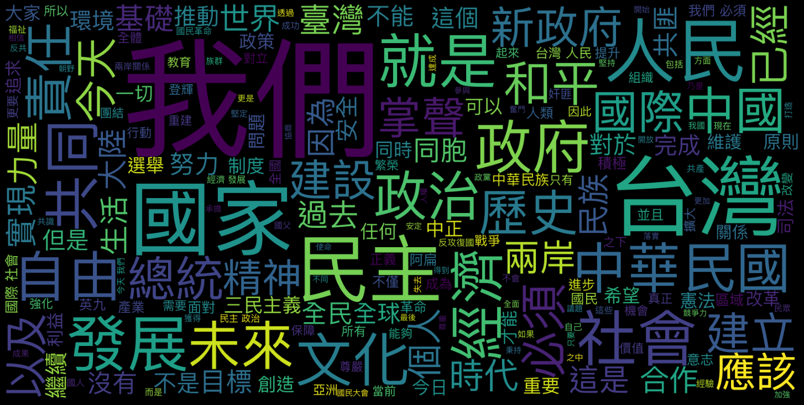
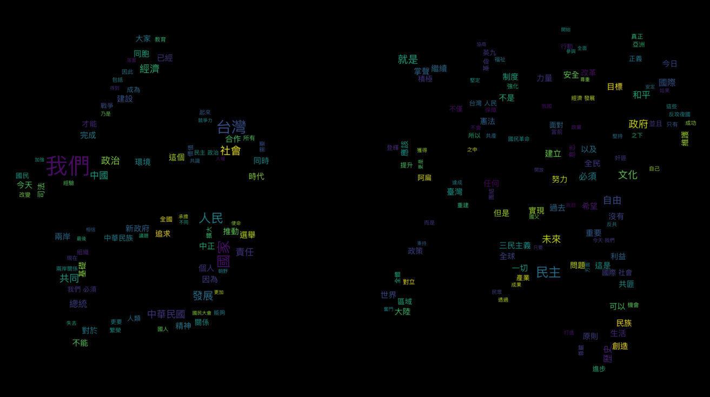
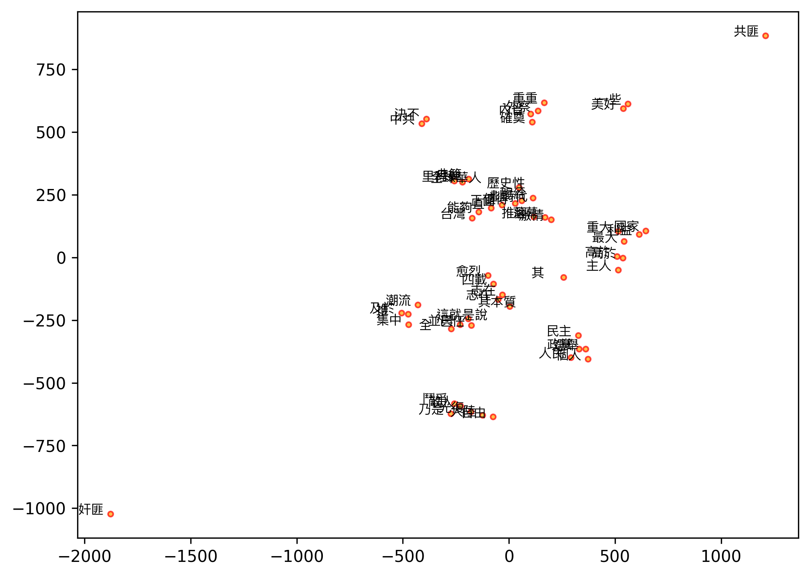

Word Embeddings with Chinese Texts¶
A simple walk-through of word2vec on a Chinese data of presidential inaugaural addresses
DEMO_DATA_ROOT = "../../../RepositoryData/data"
Loading Corpus Raw Texts¶
import nltk
from nltk.corpus.reader import PlaintextCorpusReader
import numpy as np
import jieba, re
jieba.set_dictionary(DEMO_DATA_ROOT + "/jiaba/dict.txt.big.txt")
corpus_dir = DEMO_DATA_ROOT+"/TaiwanPresidentialInaugarationSpeech_en"
twp = PlaintextCorpusReader(corpus_dir, ".*\.txt")
len(twp.raw())
53833
Word Segmentation¶
Try two methods:
ckiptaggervs.jieba
from ckiptagger import WS
/Users/Alvin/opt/anaconda3/envs/ckiptagger/lib/python3.6/site-packages/tensorflow/python/framework/dtypes.py:526: FutureWarning: Passing (type, 1) or '1type' as a synonym of type is deprecated; in a future version of numpy, it will be understood as (type, (1,)) / '(1,)type'.
_np_qint8 = np.dtype([("qint8", np.int8, 1)])
/Users/Alvin/opt/anaconda3/envs/ckiptagger/lib/python3.6/site-packages/tensorflow/python/framework/dtypes.py:527: FutureWarning: Passing (type, 1) or '1type' as a synonym of type is deprecated; in a future version of numpy, it will be understood as (type, (1,)) / '(1,)type'.
_np_quint8 = np.dtype([("quint8", np.uint8, 1)])
/Users/Alvin/opt/anaconda3/envs/ckiptagger/lib/python3.6/site-packages/tensorflow/python/framework/dtypes.py:528: FutureWarning: Passing (type, 1) or '1type' as a synonym of type is deprecated; in a future version of numpy, it will be understood as (type, (1,)) / '(1,)type'.
_np_qint16 = np.dtype([("qint16", np.int16, 1)])
/Users/Alvin/opt/anaconda3/envs/ckiptagger/lib/python3.6/site-packages/tensorflow/python/framework/dtypes.py:529: FutureWarning: Passing (type, 1) or '1type' as a synonym of type is deprecated; in a future version of numpy, it will be understood as (type, (1,)) / '(1,)type'.
_np_quint16 = np.dtype([("quint16", np.uint16, 1)])
/Users/Alvin/opt/anaconda3/envs/ckiptagger/lib/python3.6/site-packages/tensorflow/python/framework/dtypes.py:530: FutureWarning: Passing (type, 1) or '1type' as a synonym of type is deprecated; in a future version of numpy, it will be understood as (type, (1,)) / '(1,)type'.
_np_qint32 = np.dtype([("qint32", np.int32, 1)])
/Users/Alvin/opt/anaconda3/envs/ckiptagger/lib/python3.6/site-packages/tensorflow/python/framework/dtypes.py:535: FutureWarning: Passing (type, 1) or '1type' as a synonym of type is deprecated; in a future version of numpy, it will be understood as (type, (1,)) / '(1,)type'.
np_resource = np.dtype([("resource", np.ubyte, 1)])
ws = WS("/Users/Alvin/Dropbox/Corpus/CKIP_WordSeg/data")
## Print first 200 chars of file 13
print(twp.raw(fileids=twp.fileids()[13])[:200])
為年輕人打造一個更好的國家
各位友邦的元首與貴賓、各國駐台使節及代表、現場的好朋友，全體的國人同胞，大家好，Ta̍k－Ke Hó（閩南語），Tai-Ga Ho（客家語），Djavadjavai[1]（排灣語）！
感謝與承擔
就在剛剛，我和陳建仁已經在總統府裡面，正式宣佈，正式宣誓就任 中華民國第十四任 總統與副總統。（掌聲） 我們要感謝這塊土地對我們的栽培，感謝人民對我們的信任，
# word-seg the raw text and return a long string
def tokenize_raw1(raw):
word_tok = [' '.join(para) for para in ws(nltk.regexp_tokenize(raw, r'[^\s]+'))] # para-like units
raw_tok = ' '.join(word_tok)
return raw_tok
# word-seg the raw text and return list of words
def tokenize_raw2(raw):
para_list = nltk.regexp_tokenize(raw, r'[^\s]+') # para-like units
word_list = sum(ws(para_list),[])
return word_list
def tokenize_raw3(raw):
raw = re.sub(r'[\n\s\r]+', '', raw)
return ' '.join([w for w in jieba.cut(raw)])
tokenize_corpus1 = np.vectorize(tokenize_raw1)
tokenize_corpus2 = np.vectorize(tokenize_raw2)
tokenize_corpus3 = np.vectorize(tokenize_raw3)
The following experiments try to see whether a few parameters may impact the performance of Chinese tokenization:
Segmenter:
ckiptaggervs.jibeaData Structure:
Listvs.numpy.array
It seems that jieba with List structure is the fastest?
twp_corpus = np.array([twp.raw(fileids=fid) for fid in twp.fileids()])
twp_corpus_list = [twp.raw(fileids=fid) for fid in twp.fileids()]
%%time
twp_corpus_seg1a = tokenize_corpus1(twp_corpus)
CPU times: user 3min 8s, sys: 43.2 s, total: 3min 51s
Wall time: 1min 12s
%%time
twp_corpus_seg1b = tokenize_corpus1(twp_corpus_list)
CPU times: user 3min 9s, sys: 44.3 s, total: 3min 53s
Wall time: 1min 10s
%%time
twp_corpus_seg3a = tokenize_corpus3(twp_corpus)
Building prefix dict from /Users/Alvin/GoogleDrive/_MySyncDrive/RepositoryData/data/jiaba/dict.txt.big.txt ...
Dumping model to file cache /var/folders/n7/ltpzwx813c599nfxfb94s_640000gn/T/jieba.u09e98d542684bb2fcba781b9a357a057.cache
Loading model cost 2.171 seconds.
Prefix dict has been built successfully.
CPU times: user 2.11 s, sys: 35.9 ms, total: 2.15 s
Wall time: 2.48 s
%%time
twp_corpus_seg3b = tokenize_corpus3(twp_corpus_list)
CPU times: user 303 ms, sys: 3.33 ms, total: 306 ms
Wall time: 308 ms
twp_corpus[13,][:200]
'為年輕人打造一個更好的國家\r\n\r\n各位友邦的元首與貴賓、各國駐台使節及代表、現場的好朋友，全體的國人同胞，大家好，Ta̍k－Ke Hó（閩南語），Tai-Ga Ho（客家語），Djavadjavai[1]（排灣語）！\r\n\r\n感謝與承擔\r\n\r\n就在剛剛，我和陳建仁已經在總統府裡面，正式宣佈，正式宣誓就任 中華民國第十四任 總統與副總統。（掌聲） 我們要感謝這塊土地對我們的栽培，感謝人民對我們的信任，'
twp_corpus_seg1a[13][:200]
'為 年輕人 打造 一 個 更 好 的 國家 各位 友邦 的 元首 與 貴賓 、 各 國 駐 台 使節 及 代表 、 現場 的 好朋友 ， 全體 的 國人 同胞 ， 大家 好 ， Ta̍k－Ke Hó （ 閩南語 ） ， Tai-Ga Ho （ 客家語 ） ， Djavadjavai[1 ] （ 排灣語 ） ！ 感謝 與 承擔 就 在 剛剛 ， 我 和 陳建仁 已經 在 總統府 裡面 ， 正式 宣佈'
twp_corpus_seg3a[13][:200]
'為 年輕人 打造 一個 更好 的 國家 各位 友邦 的 元首 與 貴賓 、 各國 駐台 使節 及 代表 、 現場 的 好 朋友 ， 全體 的 國人 同胞 ， 大家 好 ， Ta ̍ k － KeH ó （ 閩南語 ） ， Tai - GaHo （ 客家 語 ） ， Djavadjavai [ 1 ] （ 排灣 語 ） ！ 感謝 與 承擔 就 在 剛剛 ， 我 和 陳建仁 已經 在 總統府 裡面 ，'
Data Frame Representation¶
## data frame representation
import pandas as pd
import re
twp_df = pd.DataFrame({
"fileid": twp.fileids(),
"corpus_raw": twp_corpus,
"corpus_seg_ckip": twp_corpus_seg1a,
"corpus_seg_jb": twp_corpus_seg3a
})
twp_df[['year','id','president']] = twp_df['fileid'].str.split('_', expand=True)
twp_df['president']=twp_df['president'].str.replace('.txt','')
twp_df
| fileid | corpus_raw | corpus_seg_ckip | corpus_seg_jb | year | id | president | |
|---|---|---|---|---|---|---|---|
| 0 | 1948_1_JIANGZHONGZHENG.txt | 中正承國民大會依照憲法選舉為中華民國總統，擔任國家和人民的公僕，當此就職伊始，追念我 國父和... | 中正 承 國民大會 依照 憲法 選舉為 中華民國 總統 ， 擔任 國家 和 人民 的 公僕 ... | 中正 承 國民大會 依照 憲法 選舉 為 中華民國 總統 ， 擔任 國家 和 人民 的 公僕... | 1948 | 1 | JIANGZHONGZHENG |
| 1 | 1954_2_JIANGZHONGZHENG.txt | 我大陸淪陷，已經四載。全體同胞正遭受著俄寇及其傀儡朱毛，殘殺迫害，呼號引領，急切待援之時；中... | 我 大陸 淪陷 ， 已經 四 載 。 全體 同胞 正 遭受 著 俄寇 及 其 傀儡 朱毛 ，... | 我 大陸 淪陷 ， 已經 四載 。 全體 同胞 正 遭受 著俄寇 及其 傀儡 朱毛 ， 殘殺... | 1954 | 2 | JIANGZHONGZHENG |
| 2 | 1960_3_JIANGZHONGZHENG.txt | 國民大會第三次會議，重新選舉中正，賦予先復大陸，重建中華，維護國家領土主權，解救同胞生命自由... | 國民大會 第三 次 會議 ， 重新 選舉 中正 ， 賦予 先 復 大陸 ， 重建 中華 ， ... | 國民大會 第三次 會議 ， 重新 選舉 中正 ， 賦予 先 復 大陸 ， 重建 中華 ， 維... | 1960 | 3 | JIANGZHONGZHENG |
| 3 | 1966_4_JIANGZHONGZHENG.txt | 國民大會第四次會議，根據憲法，代表全國人民，選舉中正繼續擔任中華民國第四任總統，並制定戰時授... | 國民大會 第四 次 會議 ， 根據 憲法 ， 代表 全 國 人民 ， 選舉 中正 繼續 擔任... | 國民大會 第四次 會議 ， 根據 憲法 ， 代表 全國 人民 ， 選舉 中正 繼續 擔任 中... | 1966 | 4 | JIANGZHONGZHENG |
| 4 | 1972_5_JIANGZHONGZHENG.txt | 中正今天再度接受全國國民之付託，國民大會之推選，宣誓就任中華民國第五任總統，實深感於現階段在... | 中正 今天 再度 接受 全 國 國民 之 付託 ， 國民大會 之 推選 ， 宣誓 就任 中華... | 中正 今天 再度 接受 全國 國民 之 付託 ， 國民大會 之 推選 ， 宣誓 就任 中華民... | 1972 | 5 | JIANGZHONGZHENG |
| 5 | 1978_6_JIANGJINGGUO.txt | 國民大會受國民付託，依據憲法，選舉經國為中華民國第六任總統，今天經國和謝東閔副總統宣誓就職，... | 國民大會 受 國民 付託 ， 依據 憲法 ， 選舉 經國 為 中華民國 第六 任 總統 ， ... | 國民大會 受 國民 付託 ， 依據 憲法 ， 選舉 經國 為 中華民國 第六任 總統 ， 今... | 1978 | 6 | JIANGJINGGUO |
| 6 | 1984_7_JIANGJINGGUO.txt | 親愛的全國同胞們、諸位貴賓：\r\n\r\n 國民大會第七次會議，選舉經國為中華民國第七任... | 親愛 的 全 國 同胞 們 、 諸 位 貴賓 ： 國民大會 第七 次 會議 ， 選舉 經國 ... | 親愛 的 全國 同胞們 、 諸位 貴賓 ： 國民大會 第七次 會議 ， 選舉 經國 為 中華... | 1984 | 7 | JIANGJINGGUO |
| 7 | 1990_8_LIDEHUI.txt | 開創中華民族的新時代\r\n\r\n親愛的全國同胞、各位貴賓：\r\n\r\n 國民大會第... | 開創 中華民族 的 新 時代 親愛 的 全 國 同胞 、 各 位 貴賓 ： 國民大會 第八 ... | 開創 中華民族 的 新 時代 親愛 的 全國同胞 、 各位 貴賓 ： 國民大會 第八次 會議... | 1990 | 8 | LIDEHUI |
| 8 | 1996_9_LIDEHUI.txt | 經營大台灣，建立新中原\r\n\r\n各位遠道而來的友邦元首、各位特使、外交團的各位使節、各... | 經營 大 台灣 ， 建立 新 中原 各位 遠道而來 的 友邦 元首 、 各位 特使 、 外交... | 經營 大台灣 ， 建立 新 中原 各位 遠道而來 的 友邦 元首 、 各位 特使 、 外交團... | 1996 | 9 | LIDEHUI |
| 9 | 2000_10_CHENSHUIBIAN.txt | 台灣站起來——迎接向上提升的新時代\r\n\r\n各位友邦元首、各位貴賓、各位親愛的海內外同... | 台灣 站起來 — — 迎接 向 上 提升 的 新 時代 各位 友邦 元首 、 各位 貴賓 、... | 台灣 站 起來 — — 迎接 向上 提升 的 新 時代 各位 友邦 元首 、 各位 貴賓 、... | 2000 | 10 | CHENSHUIBIAN |
| 10 | 2004_11_CHENSHUIBIAN.txt | 為永續台灣奠基\r\n\r\n各位友邦元首、使節及代表團、各位貴賓 、親愛的國人同胞：\r\... | 為 永續 台灣 奠基 各位 友邦 元首 、 使節 及 代表團 、 各 位 貴賓 、 親愛的 ... | 為 永續 台灣 奠基 各位 友邦 元首 、 使節 及 代表團 、 各位 貴賓 、 親愛 的 ... | 2004 | 11 | CHENSHUIBIAN |
| 11 | 2008_12_MAYANGJIU.txt | 人民奮起，台灣新生\r\n\r\n各位友邦元首、各位貴賓、各位僑胞、各位鄉親父老、各位電視機... | 人民 奮起 ， 台灣 新生 各位 友邦 元首 、 各位 貴賓 、 各位 僑胞 、 各位 鄉親... | 人民 奮起 ， 台灣 新生 各位 友邦 元首 、 各位 貴賓 、 各位 僑胞 、 各位 鄉親... | 2008 | 12 | MAYANGJIU |
| 12 | 2012_13_MAYANGJIU.txt | 堅持理想、攜手改革、打造幸福臺灣\r\n\r\n各位友邦元首、各位貴賓、各位僑胞、各位鄉親父... | 堅持 理想 、 攜手 改革 、 打造 幸福 臺灣 各位 友邦 元首 、 各位 貴賓 、 各位... | 堅持 理想 、 攜手 改革 、 打造 幸福 臺灣 各位 友邦 元首 、 各位 貴賓 、 各位... | 2012 | 13 | MAYANGJIU |
| 13 | 2016_14_CAYANGWEN.txt | 為年輕人打造一個更好的國家\r\n\r\n各位友邦的元首與貴賓、各國駐台使節及代表、現場的好... | 為 年輕人 打造 一 個 更 好 的 國家 各位 友邦 的 元首 與 貴賓 、 各 國 駐 ... | 為 年輕人 打造 一個 更好 的 國家 各位 友邦 的 元首 與 貴賓 、 各國 駐台 使節... | 2016 | 14 | CAYANGWEN |
Word Cloud¶
## choose one version of segmented texts
twp_corpus_seg = twp_corpus_seg3a
wst =nltk.WhitespaceTokenizer()
tokenized_corpus = [wst.tokenize(text) for text in twp_corpus_seg]
## Concordance
twp_text = nltk.text.Text(sum(tokenized_corpus,[]))
twp_text.concordance('台灣')
Displaying 25 of 185 matches:
澎 金馬地區 ， 但凡 所 規劃 ， 無不 著眼 於 整個 中國 前途 。 台灣 與 大陸 是 中國 不可分割 的 領土 ， 所有 中國 人同 為 血脈相連
的 普遍 期盼 ， 推行 民主 政治 及 自由 經濟 制度 ， 放棄 在 台灣 海峽 使用 武力 ， 不 阻撓 我們 在 一個 中國 的 前提 下 開展
。 中國 的 統一 與 富強 是 所有 中國 人 共同 的 期望 。 除了 台灣 海峽兩岸 的 人民 負有 無可 旁貸 的 責任 之外 ， 遍佈 世界各地
今天 ， 中華民族 進入 一個 充滿希望 的 新 境界 。 今天 ， 在 台灣 的 我們 ， 以 無比 的 驕傲 與 自信 ， 堅定 地 告訴 全世界 ：
同體 ； 而 第一次 由 人民 直選 總統 ， 更 讓 我們 確立 了 以 台灣 為 主體 的 奮鬥 意識 。 如何 讓 這塊 土地 更 美麗 ， 讓 生活
以 ， 登輝 無時無刻 不在 思考 文化 的 重建 與 新生 。 希望 在 台灣 地區 的 同胞 ， 能 建立 新 的 生活 文化 ， 培養 長遠 宏大 的
地域 ， 中華民族 五千年 優秀 文化 ， 也 起源於 中原 一隅之地 ， 台灣 位於 大陸 文化 與 海洋 文化 的 匯集點 ， 近 數十年 來 ， 因
泛 接觸 西方 民主 、 科學 及 現代 工商業 社會 文化 。 再 加上 台灣 的 教育 水準 與 發展 程度 ， 遠 超越 中國 其他 地區 ， 勢必
育 新文化 ， 更 在 重建 新 社會 。 隨著 政治 的 民主 開放 ， 台灣 社會 已 呈現 蓬勃 的 多元化 景象 。 我們 要 運用 多元化 所 釋
讓 全民 享有 免於 匱乏 的 自由 。 當然 ， 我們 全 心 全力 在 台灣 建設 中華民國 的 同時 ， 也 不會 忘記 海外 的 中國 人 。 我們
維護 此一 地區 的 民主 、 自由 、 繁榮 。 今天 ， 中華民國 在 台灣 的 生存 與 發展 ， 已 受到 國際 社會 的 肯定 與 尊重 。 在
領導 當局 見面 ， 直接 交換意見 。 全國 同胞們 ： 今天 我們 在 台灣 實現 了 中國 人 的 夢想 ！ 二十世紀 的 中國 人 ， 奮力 追求
運 的 關鍵 。 我們 相信 ， 同樣 是 中華民族 的 一份 子 ， 在 台灣 做 得到 的 ， 在 中國 大陸 也 可以 做到 。 因此 ， 我們 願意
敬祝 中華民國 國運昌隆 ！ 各位 貴賓 健康 愉快 ！ 謝謝 大家 ！ 台灣 站 起來 — — 迎接 向上 提升 的 新 時代 各位 友邦 元首 、 各
。 感謝 遠道而來 的 各位 嘉賓 ， 以及 全世界 熱愛 民主 、 關心 台灣 的 朋友 ， 與 我們 一起 分享 此刻 的 榮耀 。 我們 今天 在 這
見證 一個 新 時代 的 開始 。 在 二十一 世紀 來臨 的 前夕 ， 台灣 人民 用 民主 的 選票 完成 了 歷史性 的 政黨 輪替 。 這 不僅
國 歷史 上 的 第一次 ， 更是 全球華人 社會 劃時代 的 里程碑 。 台灣 不 只 為 亞洲 的 民主 經驗 樹立 了 新 典範 ， 也 為 全世界
， 追求 和平 更是 人類 理性 的 最高 目標 。 公元 2000 年 台灣 總統大選 的 結果 ， 不是 個人 的 勝利 或 政黨 的 勝利 ， 而是
， 一起 超越 了 恐懼 、 威脅 和 壓迫 ， 勇敢 的 站 起來 ！ 台灣 站 起來 ， 展現 著 理性 的 堅持 和 民主 的 信仰 。 台灣 站
！ 台灣 站 起來 ， 展現 著 理性 的 堅持 和 民主 的 信仰 。 台灣 站 起來 ， 代表 著 人民 的 自信 和 國家 的 尊嚴 。 台灣 站
。 台灣 站 起來 ， 代表 著 人民 的 自信 和 國家 的 尊嚴 。 台灣 站 起來 ， 象徵 著 希望 的 追求 和 夢想 的 實現 。 親愛 的
榮 盛典 。 今天 ， 我們 彷彿 站 在 一座 嶄新 的 歷史 門前 。 台灣 人民 透過 民主 錘鍊 的 過程 ， 為 我們 共同 的 命運 打造 了
國人 最高 的 推崇 與 衷心 的 感念 。 在 選舉 的 過程 中 ， 台灣 社會 高度 動員 、 積極 參與 ， 儘管 有 不同 的 主張 和 立場
清流 共治 」 是 阿扁 在 選舉 期間 對 人民 的 承諾 ， 也 是 台灣 社會 未來 要 跨越 斷層 、 向上 提升 的 重要 關鍵 。 「 全民
」 的 首要 目標 是 要 掃除 黑金 、 杜絕 賄選 。 長期以來 ， 台灣 社會 黑白不分 、 黑道 金權 介入 政治 的 情況 已經 遭致 台灣 人
from collections import Counter
import imageio
from wordcloud import WordCloud, ImageColorGenerator, STOPWORDS
from matplotlib import pyplot as plt
words = sum(tokenized_corpus,[])
words[:5]
sorted(Counter(words).items(), key=lambda x:x[1], reverse=True)
## Check font paths
## !fc-list :lang=zh
## Load stopwords
with open(DEMO_DATA_ROOT+'/stopwords/tomlinNTUB-chinese-stopwords.txt') as f:
stopwords = [w.strip() for w in f.readlines()]
# Create stopwords ad hoc
stopwords = set(['一個'])
wordcloud = WordCloud(font_path="/System/Library/Fonts/PingFang.ttc",
background_color='black',
#stopwords=stopwords,
width=1600, height=800
) ##add system chinese font path
wordcloud.generate(' '.join([w for w in words if w not in stopwords]))
plt.figure(figsize=(20,10), facecolor='k')
plt.imshow(wordcloud)
plt.axis("off")
plt.tight_layout(pad=0)
plt.show()
#plt.savefig('../data/twp-wordcloud2.png', facecolor='k', bbox_inches='tight')

back_color = imageio.imread(DEMO_DATA_ROOT+ '/image/tw-char.jpg')
wordcloud = WordCloud(font_path="/System/Library/Fonts/PingFang.ttc",
background_color='black',
mask=back_color,
random_state=10,
#max_font_size=20,
#min_font_size=20,
width=1200,
height=800)
wordcloud.generate(' '.join([w for w in words if w not in stopwords]))
image_colors = ImageColorGenerator(back_color)
plt.figure(figsize=(20,10), facecolor='k')
plt.imshow(wordcloud, interpolation='bilinear')
plt.axis("off")
plt.tight_layout(pad=0)
plt.show()
fig_path = 'twp-wordcloud.png'
wordcloud.to_file(fig_path)

<wordcloud.wordcloud.WordCloud at 0x7fb911d449b0>
Creating Word Embeddings¶
## Set features for parameters
embedding_size = 100
context_size = 20
min_word_count = 1
sample = 1e-3
%%time
from gensim.models import word2vec
w2v_model = word2vec.Word2Vec(tokenized_corpus,
size=embedding_size,
window=context_size,
min_count=min_word_count,
sample=sample,
iter=50)
CPU times: user 4.37 s, sys: 108 ms, total: 4.48 s
Wall time: 5.32 s
Exploring Semantic Similarities¶
## View Similar Words
w2v_model.wv.most_similar('人民', topn=5)
w2v_model.wv.most_similar('台灣', topn=5)
[('一些', 0.8743070363998413),
('能夠', 0.8680516481399536),
('正面', 0.8574150204658508),
('賜給', 0.8569070100784302),
('一直', 0.8510352373123169)]
similar_words = {key_word:[similar_word[0] for similar_word in w2v_model.wv.most_similar(key_word, topn=6)]
for key_word in ['台灣','人民','國家','民主','中共','大陸','共匪','自由']}
similar_words
{'台灣': ['一些', '能夠', '正面', '賜給', '一直', '美好'],
'人民': ['政黨', '高於', '主人', '個人', '推翻', '選舉'],
'國家': ['最大', '落幕', '利益', '激情', '重大', '高於'],
'民主': ['里程碑', '劃時代', '歷史性', '全球華人', '值得', '典範'],
'中共': ['內省', '決不', '潮流', '外察', '確奠', '重重'],
'大陸': ['光復', '志在', '推', '四載', '及於', '集中'],
'共匪': ['其', '乃是', '敵人', '奸匪', '愈烈', '鬥爭'],
'自由': ['全', '其本質', '志在', '己任', '並與', '這就是說']}
Visualization¶
## Visualization
from sklearn.manifold import TSNE
all_words = sum([[key_word]+similar_words for key_word, similar_words in similar_words.items()], [])
all_words_vec = w2v_model.wv[all_words]
tsne = TSNE(n_components=2, random_state=0, n_iter=10000, perplexity=2)
np.set_printoptions(suppress=True)
T = tsne.fit_transform(all_words_vec)
labels=all_words
## Chinese Font Issues in Plotting
from matplotlib import rcParams
from matplotlib.font_manager import FontProperties
import matplotlib.pyplot as plt
# rcParams['axes.unicode_minus']=False
myfont = FontProperties(fname='/System/Library/Fonts/PingFang.ttc')
import matplotlib.pyplot as plt
plt.figure(figsize=(8,6), dpi=300)
plt.scatter(T[:,0],T[:,1], c="orange", edgecolors='r', alpha=0.7, s=10)
for label,x,y in zip(labels, T[:,0],T[:,1]):
plt.annotate(label, xy=(x, y), xytext=(-20,0), size=8, textcoords='offset points',fontproperties=myfont)
